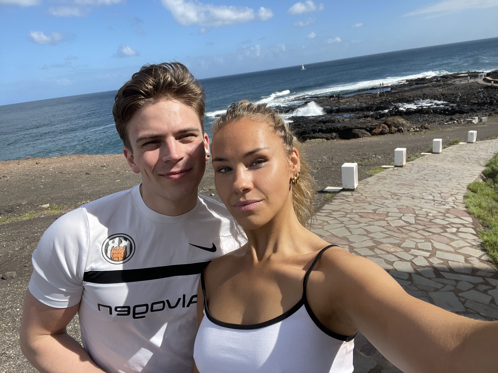

Manneskja vikunnar
LeBron James
Í vikunni sem var að líða varð LeBron James stigahæsti leikmaður NBA deildarinnar frá upphafi. Því fær hann hinn mikla heiður að vera valinn manneskja vikunnar.
14. febrúar 2023
Vorönnin er komin á fullt skrið í DTU en ég kom endurnærður til baka til Danmerkur eftir að hafa farið í frí með Viktoríu til Kanarý eyja, í bæinn Agaete, í níu daga. Okkur Viktoríu tókst líklega það afrek að lækka meðalaldurinn á hótelinu um nokkra áratugi og okkur þótti alltaf mjög merkilegt þegar við sáum fólk undir fimmtugt á hótelinu.
Fríið heppnaðist mjög vel þar sem við vorum einmitt að leitast eftir ró og frið og við vorum líka frekar heppin með veður.
Á bakaleiðinni millilentum við í París þar sem ég náði að strika út atriði af markmiðalistanum mínum: Að sjá Messi spila. Andrúmsloftið á vellinum var rosalegt, PSG voru að keppa við Reims en Reims náðu að þagga niður í stuðningsmönnum PSG þegar þeir skoðruðu jöfnunarmark í síðustu sókn leiknsins.
Í vikunni ákvað ég að breyta til um umhverfi og skoðaði fjöldan allan af bókasöfnum og kaffihúsum þar sem ég lærði of vann fyrir Sýn. Ég skoðaði til dæmis Det Kongelige Bibliotek sem er á meðal stærstu bókasafna í heimi og það stærsta á Norðurlöndum. Ég skoðaði líka aðstæður mastersnema í KU (Kobenhavns Universitet) við Íslandsbryggju.
Í lok vikunnar fór ég út að borða í borginni og síðan hópuðumst við samnemendurnir saman á Bastard Café um kvöldið en það er frægt kaffihús/bar sem býður uppá mörg þúsund tegundir af borðspilum.
Fréttabréfið verður ekki lengra að sinni, hér fyrir neðan má finna nokkrar myndir og manneskja vikunnar er valin. Ég mun einnig koma til með að setja alls konar tölfræði og grafík þar sem mig langar að æfa mig í því, svo það er liður hér neðst sem ég kalla tölfræðimola vikunnar.
Yfir og út.
Manneskja vikunnar
Í vikunni sem var að líða varð LeBron James stigahæsti leikmaður NBA deildarinnar frá upphafi. Því fær hann hinn mikla heiður að vera valinn manneskja vikunnar.
Tölfræðimoli vikunnar
Á IMDB er hægt að sjá lista yfir þær kvikmyndir sem hafa þar hæstu einkunnirnar. Gífurlega mismunandi er hversu mikið fjármagn framleiðendur myndanna höfðu á milli handanna og því langaði mig að vita: Hver af efstu 50 myndum allra tíma hefur bestu einkunn miðað við framleiðslukostnað. Sjá graf og töflu fyrir neðan.